Krankenfahrten
Krankenfahrten für alle Kassen — sitzend und liegend, zuverlässig zu jedem medizinischen Termin.
Mehr erfahrenHerzlich Willkommen bei unserem Krankenfahrdienst. Wir bringen Sie sicher, pünktlich und komfortabel zu jedem Termin — mit Herz unterwegs.
Zuverlässig. Pünktlich. Sicher.
Unser Team steht Ihnen für alle Fahrten zum Arzt, zur Dialyse, zur Chemotherapie und zu weiteren medizinischen Terminen zur Verfügung. Wir fahren für alle Krankenkassen und bieten sowohl sitzende als auch liegende Transporte an.
Vertrauen Sie auf unsere jahrelange Erfahrung im Bereich Krankenfahrten — wir sind 24 Stunden erreichbar und für Sie da!
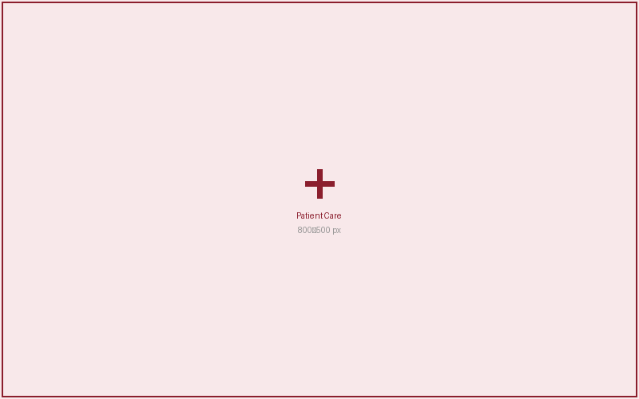
Ihre Erfahrung hilft anderen Fahrgästen, die richtige Entscheidung zu treffen.
Bewertung hinterlassen
Scannen Sie den QR-Code oder klicken Sie unten — Ihre Meinung zählt!
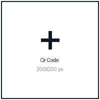
Direkt zu unserem Google-Profil — schnell und unkompliziert.
Auf Google bewertenProfessionelle Krankenfahrten ganz nach Ihren Bedürfnissen.
Krankenfahrten für alle Kassen — sitzend und liegend, zuverlässig zu jedem medizinischen Termin.
Mehr erfahren
Rollstuhlfahrten — sitzend und liegend, komfortabel und sicher für mobilitätseingeschränkte Patienten.
Mehr erfahren
Dialysefahrten — sicher, komfortabel und pünktlich zu Ihrem regelmäßigen Dialysetermin.
Mehr erfahren
Fahrten zur Chemo- und Strahlentherapie — einfühlsam, pünktlich und auf Ihre Bedürfnisse abgestimmt.
Mehr erfahren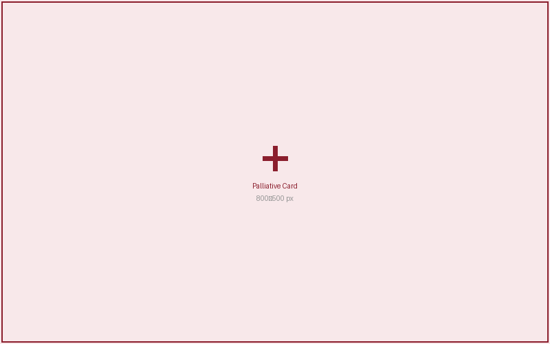
Arztfahrten zu allen Fachärzten und Kliniken — zuverlässig, komfortabel und für alle Kassen.
Mehr erfahren
Rund um die Uhr an 365 Tagen im Jahr erreichbar — schnelle Hilfe und kompetente Beratung für Ihre Krankenfahrt.
Mehr erfahrenUnser Team aus Geschäftsführung und erfahrenen Fahrern.
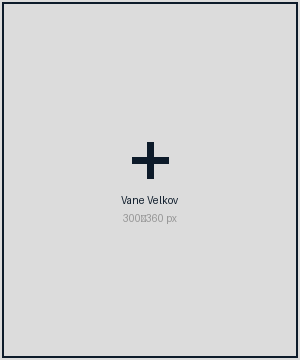
Geschäftsführer
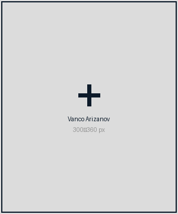
Exam. Altenpfleger · Gerontopsychiatrische Fachkraft · Krankenfahrtendienstleiter
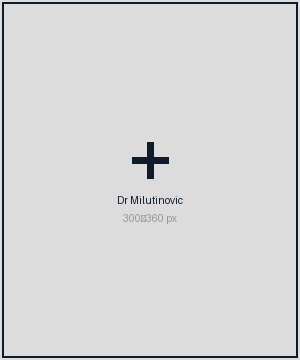
Fahrzeuge im Einsatz
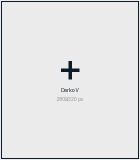
Exam. Altenpfleger · Gerontopsychiatrische Fachkraft · Krankenfahrtendienstleiter
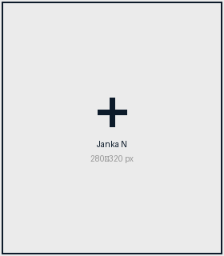
Krankenschwester
Exam. Altenpfleger · Stellv. Krankenfahrtendienstleiter
Altenpflegehelferin
Krankenpfleger
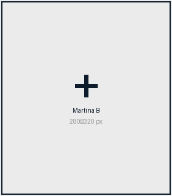
Exam. Krankenschwester in Anerkennung
Altenpflegehelfer
Altenpflegehelferin
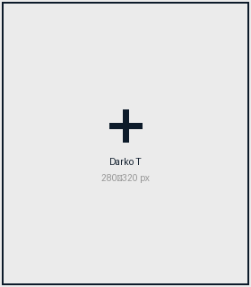
Altenpflegehelfer
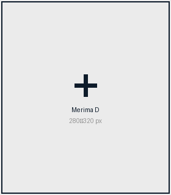
Altenpflegehelferin
Altenpflegehelfer
Altenpflegehelferin
Chemo- & Strahlentherapieskraft
Altenpflegehelferin
Altenpflegehelferin
Altenpflegehelferin
Wählen Sie Ihre Stadt.

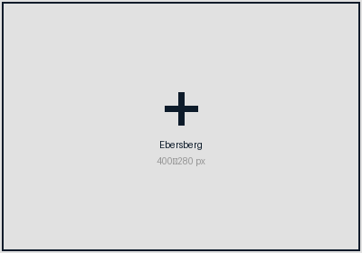
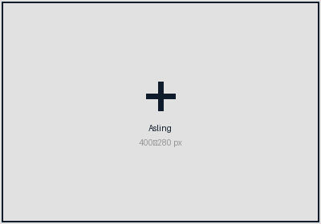
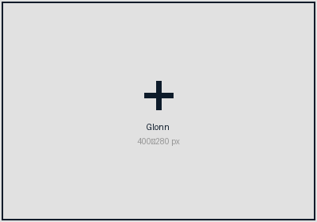